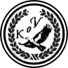

|

|
>> Содержание / Список кланов /
KeepersOfVictory
«… Как бы не так!» - Максимус, первый легат третьей центурии Второго имперского полка «Непобедимые» был вне себя. «Что они себе позволяют, эти жалкие выскочки храма Аида!, теперь им требуется по 15 молодых людей в день, чтобы насытить свое мерзкое божество! Причем не каких-нибудь, а из элитных центурий богини Ники. Благодаря этим центуриям, которые Ника собственноручно благословила, полк не проиграл ни одного сражения. И куда только Богиня смотрит? А с чем я через неделю выйду навстречу Императору? Он меня за это по головке не погладит… И так уже меньше сотни бойцов осталось.»
Максимус ходил из угла в угол в приемных покоях главного жреца храма. Его держали здесь уже второй час, вежливо сообщая каждые пять минут, что жрец вот-вот освободиться… До очередного жертвоприношения оставалось менее четверти дня, и Максимус решил сам пойти к жрецу, молот Гефеста ему в «вырезано цензурой», и сказать, что более он не намерен терять ни одного солдата из вверенной ему центурии, а если жрецу нужны «овцы», пусть положит на алтарь своих жрецов. Вон они у него толстые какие, отъелись на жертвенных харчах.
«Легки на помине…» - подумал Максимус, услышав шелест отодвигаемой занавески. В комнату вошли двое: один был с ног до головы закутан в темные одеяния, во втором же Максимус с удивлением узнал одного из своих воинов, которого (он видел своими глазами) «оприходовали на столе» еще седмицу назад. Он уже хотел было поздороваться, но понял, что ЧТО-ТО не так. Уж слишком зловещей была тишина, и слишком безжизненными были глаза бывшего соратника. Человек в черном, хотя у старого легата возникло подозрение, что под одеяниями скрывается совсем не человек, уж больно плавной и странной была его походка, молча кивнул. Воин поднял глаза - в них плясало Смертельное Пламя.
«Чтоб тебе Венеру в постель на два месяца!!!» - с утробным рыком Максимус перепрыгнул через стол, на лету доставая верный меч. И бывшие соратники схватились не на жизнь а на смерть…
Через два месяца, в ворота одного селения в стране галлов, названия которого уже никто не помнит, постучался странно одетый человек. Он был с ног до головы замотан в черные одежды, под которыми явно угадывался доспех, причем не мужицкая кольчуга, а строевые латы. На поясе у него висела странного виду железная дубина, как лапа какого-то неведомого зверя.
- Кто ты? Назови себя!!! - крикнул старый воевода со сторожевой вышки.
- Я, Хранитель Победы - сказал незнакомец, и поднял голову. На его шлеме была Печать богов - Лавровый Венок, а в глазах горел живой, но пугающий огонь!
Огонь ПОБЕДЫ!!!
Через 12 лет в лесах Галлии уже вовсю звучало имя Большой Сотни «Хранителей Победы», но никто так и не узнал имени Первого Хранителя, поэтому все звали его просто: «ДубинЬщик»!
Официальный сайт клана: http://kov.kgs.ru/
|
 |
|